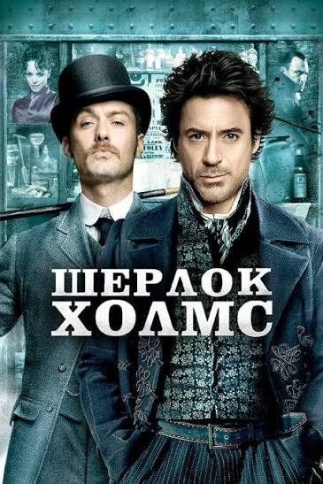
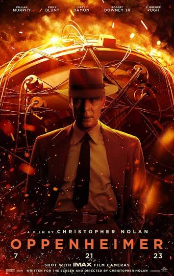

Світ кіно
Роберт Дауні-молодший зіграв у багатьох відомих фільмах. Він виконував ролі супергероїв, детективів та історичних персонажів. Нижче представлені деякі з його найвідоміших робіт.
Натискай на постери, щоб перейти на сторінки фільмів та дізнатися про них більше.
Залізна людина
2008 рік
Тоні Старк — геніальний винахідник, який створює високотехнологічний костюм і стає супергероєм. Ця роль принесла актору світову популярність.
Ліва половина — IMDb, права — Marvel.
Шерлок Голмс
2009 рік

Роберт виконав роль знаменитого детектива Шерлока Голмса. Разом із доктором Ватсоном він розслідує загадкові справи та протистоїть небезпечним ворогам.
Натискай у будь-якому місці постера.
Оппенгеймер
2023 рік

Історична драма про фізика Роберта Оппенгеймера. Роберт Дауні-молодший зіграв Льюїса Штрауса та отримав за цю роль премію «Оскар».
Натискай у будь-якому місці постера.